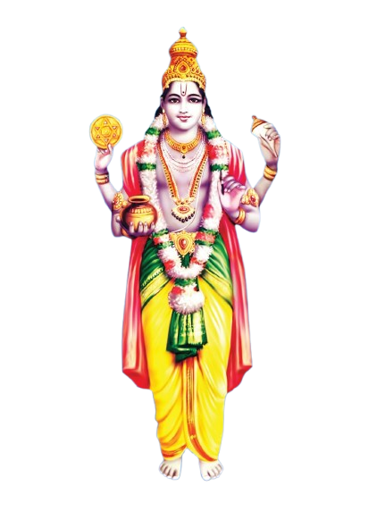
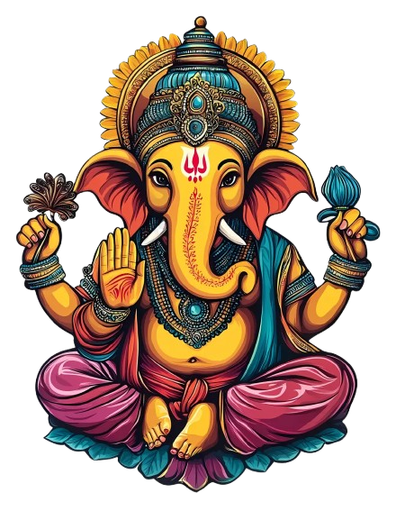
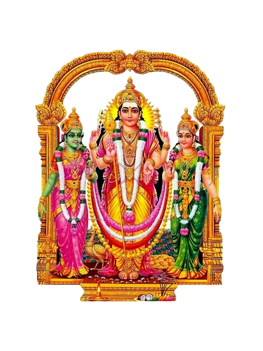

SREE DHANVANTRI MANDHIR


DHANVANTRI

Dhanvantari, the Hindu God of Medicine, is revered as the divine healer and the father of Ayurveda.
Emerging from the churning of the ocean (Samudra Manthan) carrying a pot of Amrita (nectar of
immortality),
he symbolizes health, longevity, and well-being.
Depicted with four hands holding a conch, discus, pot of Amrita, and medical scriptures, he is believed to have imparted the knowledge of Ayurveda to sages like Sushruta and Charaka.
Worshiped especially on Dhanteras, his blessings are sought for good health and protection from diseases. Even today, his legacy influences Ayurveda, holistic healing, and modern medicine.
LORD GANESHA
Ganesha, the beloved Hindu deity, is worshiped as the remover of obstacles, the god of wisdom, and
the patron of arts and sciences.
Recognized by his elephant head and large belly, he symbolizes intellect, prosperity, and
success.
According to Hindu mythology, he is the son of Lord Shiva and Goddess Parvati, and his vehicle is a small mouse, representing humility and control over desires. Ganesha is invoked at the beginning of new ventures, rituals, and important life events to ensure success and remove hindrances.
Celebrated grandly during **Ganesh Chaturthi**, devotees offer prayers, sweets like **modaks**, and seek his blessings for wisdom and prosperity. His influence extends beyond religion, inspiring art, literature, and cultural traditions worldwide.


LORD MURUGAN WITH VALLI AND DEIVANAI
Lord Murugan, also known as Kartikeya, Skanda, and Subramanya, is the Hindu God of War and Victory.
He is the son of Lord Shiva and Goddess Parvati and is revered as the divine protector and leader of
celestial armies.
Depicted with a spear (**Vel**) in his hand and riding a peacock, he symbolizes wisdom, courage, and triumph over evil. His six faces represent divine knowledge and are linked to his birth in the six sacred places (**Aarupadai Veedu**) in Tamil Nadu.
Worshiped especially in South India and Sri Lanka, his major festivals include **Thaipusam** and **Skanda Sashti**, where devotees seek his blessings for strength, prosperity, and protection from negative forces.
Murugan's teachings emphasize righteousness, devotion, and self-discipline, making him a beloved deity among spiritual seekers.
Opening Hours
Morning : 06:00AM TO 12:00PM
Evening : 04:00PM TO 08:00PM
Morning : 06:00AM TO 12:00PM
Evening : 04:00PM TO 08:00PM
Find Us
Near Adhiyamaan College of Engineering
Kumudepalli
Hosur
TN 635109
India
Near Adhiyamaan College of Engineering
Kumudepalli
Hosur
TN 635109
India
© 2025. All Rights Reserved.